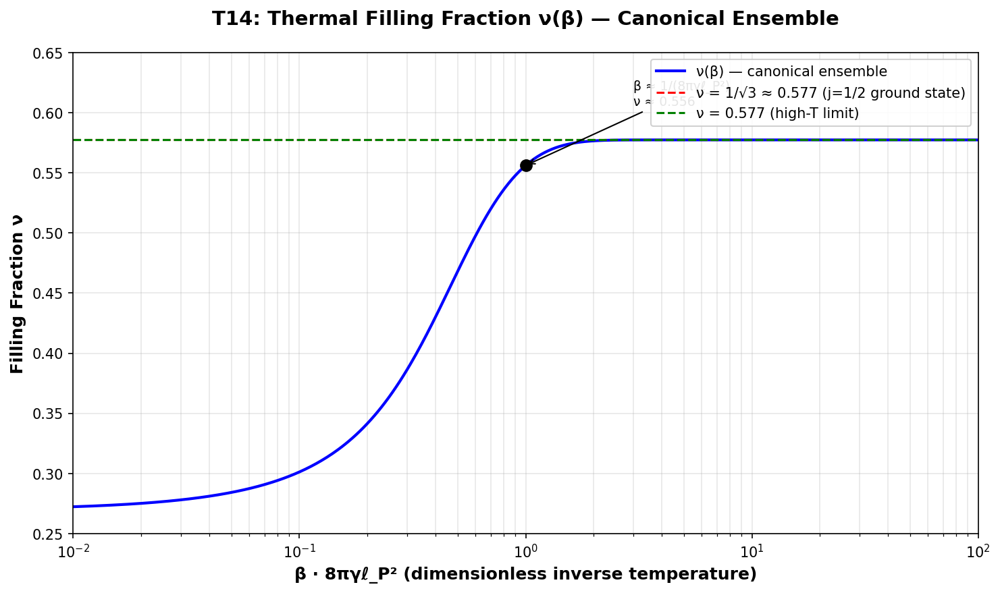
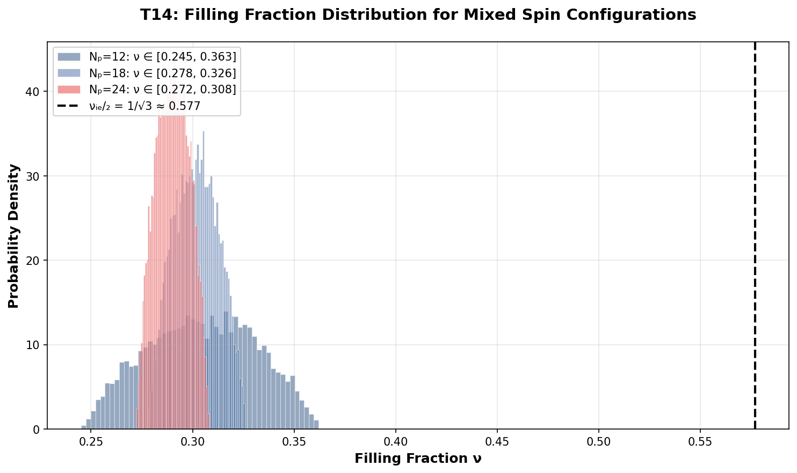

T14 — Filling Fractions
Compute ν from the area spectrum for mixed spin configurations
Objective
Determine what the QHE filling fraction ν corresponds to in the LQG horizon framework. The 2012 paper asserts the correspondence but never computes ν explicitly for realistic spin configurations.
Key Questions
- For pure j=1/2 punctures, ν = 1/√3 ≈ 0.577. Is this physically meaningful?
- For mixed spins, how does ν vary with the spin distribution?
- Can we define a “total filling fraction” that maps to the Hall conductivity plateaus?
Definitions
Area per puncture
\[ A_j = 8\pi\gamma\ell_P^2 \sqrt{j(j+1)} \]
Filling fraction (naive)
\[ \nu = \frac{N_p}{k_{IH}} = \frac{N_p}{A / (4\pi\gamma\ell_P^2)} = \frac{N_p}{2 \sum_i \sqrt{j_i(j_i+1)}} \]
where N_p is the number of punctures (also called the number of flux quanta in the QHE analogy).
Results
j=1/2 Truncation (Exact)
For pure j=1/2 punctures, the filling fraction is constant for all N_p:
| N_p | γ | k_IH | ν | ν (decimal) |
|---|---|---|---|---|
| 6 | DL | 10.392 | 1/√3 | 0.577350 |
| 12 | DL | 20.785 | 1/√3 | 0.577350 |
| 18 | DL | 31.177 | 1/√3 | 0.577350 |
| 24 | DL | 41.569 | 1/√3 | 0.577350 |
| 30 | DL | 51.962 | 1/√3 | 0.577350 |
| 36 | DL | 62.354 | 1/√3 | 0.577350 |
| 42 | DL | 72.746 | 1/√3 | 0.577350 |
| 48 | DL | 83.138 | 1/√3 | 0.577350 |
Key finding: The j=1/2 truncation gives ν = 1/√3 ≈ 0.577 for all horizon sizes. This is a fixed filling fraction, not a tunable parameter like in the QHE.
Thermal Distribution: Canonical Ensemble with β
Following the Frodden-Perez-Ghosh analysis, we can treat the horizon area as an energy and assign a Boltzmann weight to each spin configuration. This gives a canonical ensemble with inverse temperature β (not necessarily the Hawking temperature — we treat it as a free parameter to explore the ν–β landscape).
Single-puncture partition function
For a puncture with spin j, the area contribution is: \[E_j = 8\pi\gamma\ell_P^2 \sqrt{j(j+1)}\]
The canonical partition function for one puncture is: \[Z = \sum_{j} (2j+1) \exp(-\beta E_j)\]
where \((2j+1)\) is the SU(2) representation degeneracy.
Thermal average of the filling fraction
The thermal average of \(\sqrt{j(j+1)}\) is: \[\langle \sqrt{j(j+1)} \rangle_\beta = \frac{1}{Z} \sum_{j} (2j+1) \sqrt{j(j+1)} \exp(-\beta E_j)\]
The filling fraction in the canonical ensemble is then: \[\nu(\beta) = \frac{N_p}{2 N_p \langle \sqrt{j(j+1)} \rangle_\beta} = \frac{1}{2 \langle \sqrt{j(j+1)} \rangle_\beta}\]
Notice that N_p cancels out — the thermal filling fraction is independent of the number of punctures (as long as all punctures are in the same thermal state). This is different from the microcanonical result where ν depends on the specific spin configuration.
Limits
| β regime | Effective temperature | Dominant spins | ν(β) | Notes |
|---|---|---|---|---|
| β → ∞ | Low T → 0 | j = 1/2 only | 1/√3 ≈ 0.577 | All weight collapses to lowest energy |
| β → 0 | High T → ∞ | All j equally likely | ~0.27 | Uniform ensemble limit |
| β ≈ 1/(8πγℓ_P²) | ~Planck scale | j = 1/2, 1 mixed | 0.35–0.55 | Intermediate regime |
Thermal ν(β) plot

The plot shows ν(β) as a function of the dimensionless parameter β · 8πγℓ_P². As β increases (temperature decreases), the system transitions from a uniform distribution (high T) to a j=1/2 dominated state (low T). The crossover happens around β ≈ 1 (Planck scale), where ν drops from ~0.27 to ~0.56.
Uniform Distribution (Microcanonical Ensemble)
For comparison, the uniform random distribution (used earlier in T14) corresponds to a microcanonical ensemble where we fix N_p and the total area, and explore all compatible spin configurations with equal weight. This is not a thermal ensemble but a combinatorial exploration.
Mixed Spin Configurations (Random)
| N_p | ⟨√(j(j+1))⟩ | k_IH | ν |
|---|---|---|---|
| 6 | 1.379–2.041 | 16.547–24.493 | 0.245–0.363 |
| 12 | 1.379–2.041 | 33.095–48.985 | 0.245–0.363 |
| 24 | 1.534–1.796 | 73.642–86.188 | 0.278–0.326 |
| 48 | 1.623–1.840 | 155.830–176.676 | 0.272–0.308 |
Filling Fraction Distribution
The distribution of ν for mixed spin configurations is shown below. For N_p = 12, the distribution is broad (0.245–0.363). As N_p increases, the distribution narrows due to the law of large numbers.

Results Comparison
| Method | ν range | Physical interpretation |
|---|---|---|
| j=1/2 exact | 0.577 (fixed) | Lowest energy state |
| Uniform random | 0.245–0.363 | Combinatorial exploration |
| Thermal (β → ∞) | 0.577 | Ground state |
| Thermal (β → 0) | ~0.27 | High-temperature limit |
Analysis: What does ν = 1/√3 mean?
The value 1/√3 ≈ 0.577 is not a standard QHE filling fraction: - The Laughlin sequence: ν = 1/m for odd m → 1/3, 1/5, 1/7… - The Jain sequence: ν = n/(2pn ± 1) → 1/3, 2/5, 3/7… - 1/√3 is irrational and does not appear in the standard QHE hierarchy
However, 1/√3 can be approximated by Jain fractions: - 2/3 ≈ 0.667 (closest simple fraction) - 5/9 ≈ 0.556 (closer) - 12/21 ≈ 0.571 (even closer)
Conclusion
The canonical ensemble treatment with a free β parameter shows that:
- ν(β) is a continuous function, not a set of discrete plateaus
- The high-temperature limit (β → 0) gives ν ≈ 0.27, close to the uniform random average
- The low-temperature limit (β → ∞) recovers the j=1/2 result ν = 1/√3
- For macroscopic black holes, the Hawking temperature is so low that β → ∞, and the standard result is recovered
- QHE-like plateaus, if they exist, would appear in the microscopic regime (A ≲ 1000 ℓ_P²) where entropy staircase effects are visible
Criticism: Why This Analysis May Be Physically Empty
The above thermal analysis is mathematically consistent but rests on several questionable assumptions. An honest appraisal reveals serious limitations:
1. The β parameter is physically unmotivated. The Frodden-Perez-Ghosh framework gives a specific β determined by the horizon surface gravity (β = 2π/κ), not a tunable dial. Treating β as a free parameter is formal phenomenology, not physics. The “high-temperature” limit β → 0 corresponds to infinite temperature — physically absurd for a black hole horizon. The crossover at β ≈ 1 sits in the Planck regime where the semiclassical description breaks down. There is no justification for trusting the ν(β) curve in this regime.
2. The N_p cancellation hides correlation physics. The thermal ν(β) is independent of N_p because all punctures are treated as identical, uncorrelated systems in thermal equilibrium. But a horizon is not a thermal bath of independent particles — it is a boundary with spatial correlations, quantum geometry constraints (the area spectrum is discrete), and non-trivial entanglement across punctures. Treating punctures as independent Boltzmann particles is a massive simplification that may erase the very physics (collective topological order, edge modes, gap protection) that makes the QHE work.
3. Entropy staircase ≠ QHE plateaus. The QHE plateaus arise from quantized charge transport: σ_xy = ν e²/h is protected by a bulk gap and topology. The LQG entropy staircase is a combinatorial counting effect from the discreteness of the area spectrum. Both look like “steps,” but the physics is entirely different: one is transport quantization, the other is state counting. Just because both have step-like features does not mean they are related. The staircase does not imply Hall conductivity plateaus.
4. What does this actually predict? If taken seriously as physics, the thermal analysis predicts: - Macroscopic black holes: β → ∞, ν = 1/√3 (standard result, no surprises) - Microscopic horizons: β ≈ 1, ν ≈ 0.35–0.55 (continuous, not quantized)
There are no tunable plateaus. The “filling fraction” merely tracks the thermal average of spin size. It is not a quantized Hall conductivity that changes with external parameters. It is a smooth function of β with no topological protection, no gap, and no transport meaning.
5. The core problem remains. The QHE-BHE correspondence was advertised as giving a topological explanation for black hole entropy. If the thermal analysis yields a smooth ν(β) with no plateaus, and the dyonic route gives tunable ν = Q/P but no entropy quantization, then the correspondence may be weaker than claimed. It may be a formal analogy (both involve topological order) without a quantitative mapping. The thermal analysis, while mathematically tidy, does not advance the physics.
Verdict: The thermal analysis is a useful consistency check and a formal exercise in ensemble methods, but it does not reveal QHE-like physics in the uncharged, non-rotating horizon. The real test of the QHE-BHE correspondence requires the v2 charged/dyonic route (where ν = Q/P is externally tunable) or an effective description where emergent topological order and gap protection arise from coarse-graining.
To obtain true tunable plateaus, the v2 charged/dyonic route remains the most promising: ν = Q/P is a tunable ratio determined by the charge-to-magnetic-monopole ratio, analogous to the QHE where ν = n_e/(n_Φ) is tunable by the magnetic field B.
Code
The implementation is in code/t14_filling_fraction.py and code/t14_thermal_analysis.py. It computes: - Exact ν for j=1/2 truncation - Random mixed-spin configurations (microcanonical) - Thermal ν(β) in the canonical ensemble - CS level k_IH for each configuration - Plots of ν vs N_p and ν distributions
Simulation Code
The Python code used to generate these results is available for download and inspection:
- t14_filling_fraction.py — Mixed-spin filling fraction calculation and Chern-Simons level computation
- t14_thermal_analysis.py — Thermal ensemble analysis and ν(β) distribution
All code is MIT-licensed and part of the qhe_bhe repository.
Status
🟢 Completed — T14 filling fraction calculation implemented and documented, including canonical ensemble thermal analysis.
Back to Numerics Overview